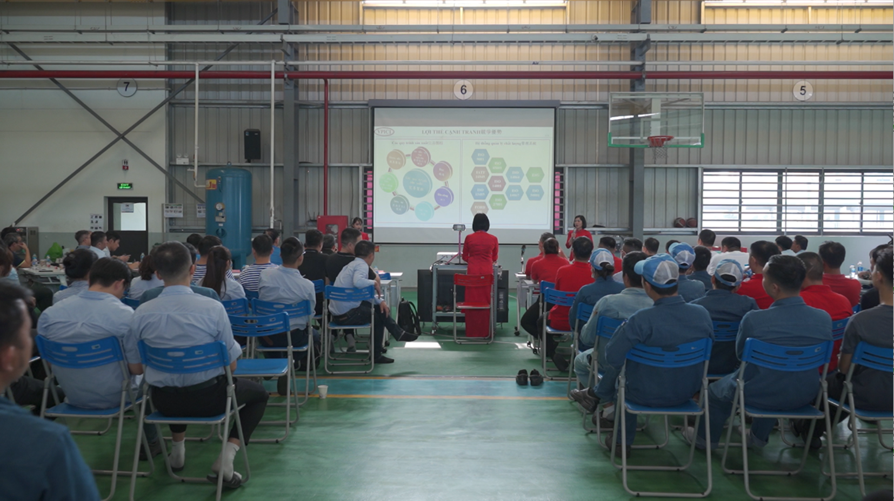
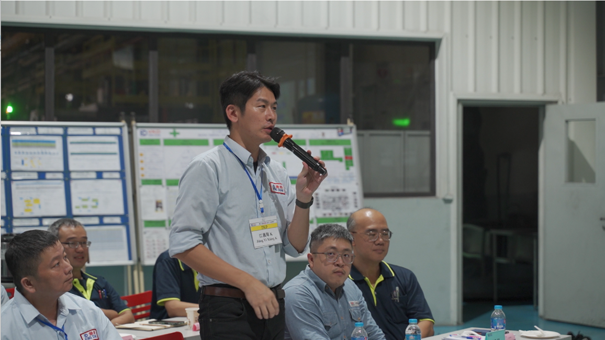

上午08:30，各交流隊在VKD集合， 進行去VPIC1參觀現場.
02 VKD參觀現場！


早上10:00，回到VKD進行參觀現場.
2024年-11月-16日, “KDBU第三届QCC聯合發表會”活動于越南金鍛舉辦。本次交流發表活動共有七支隊伍參加，其中VPIC1，TKD，VKD，FKD，KDI各派一支代表隊，HKD有2支隊伍參加。通過KDBU QCC成果發表交流，激動各BU-QCC品保圈活動越辦越好！
上午08:30，各交流隊在VKD集合， 進行去VPIC1參觀現場.
早上10:00，回到VKD進行參觀現場.
下午13:30，活動開始，VKD 協理主持活動發表.
VKD 金刚人圈進行發表
VPIC1蓝行星圈 進行發表
TKD 閃電圈 進行發表.
FKD精品圈進行發表.
HKD远航圈(机加工课)圈 進行發表. HKD向上圈(模具课) 進行發表
KDI Majapahit圈進行發表
FKD 翁協理 進行感言發表
VPIC1 吳總經理進行感言發表
VLH 羅子欽經理進行感言發表
VKD 呂總經理進行感言發表
TKD 江義翔課長進行感言發表

QCC活動舉辦仪式進行， 接棒工廠FKD.
參加人員合影留念.